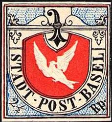
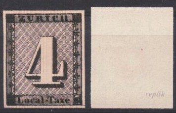
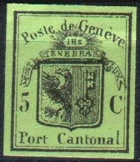
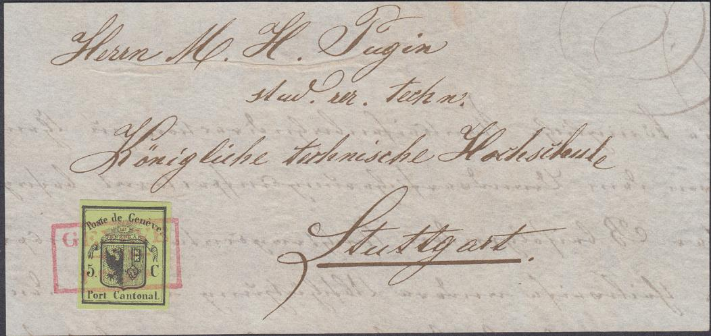
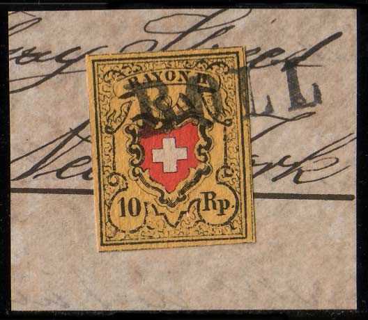
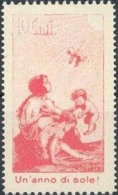
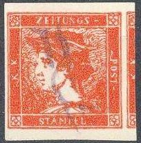

(Peter Winter forgeries)
Return To Catalogue - Winter forgeries, part 2
Note: on my website many of the
pictures can not be seen! They are of course present in the
catalogue;
contact me if you want to purchase the catalogue.
The forger Peter Winter (Germany) made forgeries of many classic and rare stamp of several countries in the 1980's. They sometimes have the word 'replik' written on the backside (but not always). They are printed on modern paper (the paper doesn't 'look' old).

Forgeries of Switzerland
Peter Winter has made many forgeries of the early stamps of Switzerland.
Forgeries of Basel:

(Peter Winter forgeries)
In these forgeries, there are always the same ink spots close to the left inner frame line next to the '2 1/2'. The cancel on the two stamps above doesn't look like anything I have seen on the stamps of Basel (maybe he imitated a very rare cancel?). I posess a Winter forgery with the dove inverted ('kopfstehende Prägung', I've even seen it on letter). I also posess a Winter forgery of the essay (the color blue is now green as shown above), with the same distinghuishing characteristics.
(Winter forgery? Cancel: 'BASEL 30 OCT. 1848 NACH-MITTAG', I've
seen other forgeries on pieces of a letter with exactly the same
cancel adressed to 'Herrn Paul Bloesch & Cie Biel').
Geneva:
All the stamps of Geneva have been forged by Peter Winter, the double stamp, the 5 c small eagle, the 5 c large eagle, the 5 c large eagle black on dark green and the envelope cut (5 c green).
(Peter Winter forgery on letter, reduced size)
I have seen the same forged letter adressed to 'Monsieur Nicodeme de Fluc Chevaillier de l'ordre Royale et Militaire a Sachsleu Canton d'Unterwalde' with the same stamp, but with the datecancel changed from 'GENEVE 25 MARS 50 8 1/2 S' to 'GENEVE 11 FEVR 50 10 1/2 M'.
Peter Winter also offered forgeries of stamps off letter, examples (note the very peculiar cancel on the second stamp):
(Peter Winter forgeries)
 

(Forgeries of Geneva)


Peter Winter forgeries also exist pasted on (fake) letters. The
small eagle always has the same defects (hole under "o"
of "Port", break in the upper left thin frameline). The
same fake letter can be found in 'The House of Stamps' catalogue,
but now with three Swiss stamps on it.
Neufchatel:
The normal stamp and a 'proof' have been forged by Peter Winter:


(Neufchatel forgery and a 'proof' also made by Peter Winter)
Vaud:
Both values (4 c and 5 c) have been forged by Peter Winter:

(forgery of Vaud)
These Winter forgeries also exist on fake letters:
The cancel on these forged envelopes always seems to be: 'GENEVE 25 MARS 50 8 1/2 S' (in red). Another forgery with a black rozette cancel:

Winterthur:


(Winterthur forgeries)
Zürich:
In total 6 different stamps of Zurich were forged by Peter Winter; two 'essays' (with '18' and '43' in the corners) in the values 4 r and 6 r, and the normal stamps with horizontal and vertical lined background (both values so 4 forgeries).


(Zurich forgeries)
I posess a 4 r Winter forgery with the '18' in the left lower corner and '43' in the right lower corner (it resembles a proof, 'Esslinger Essay', apparantly, as in the picture shown below). I also posess a forgery of the 6 r value made by Winter, the white margins are very large (too large I think, as shown in the picture below). These two forgeries do not look very convincing (they look too modern).


(Other Winter forgeries of Zurich)
Some forgeries of the federal issues:

(note the 'BOLL' cancel on both stamps)
Peter Winter seems to have forged the following values: 2 1/2 r 'Ortspost' with cross 2 1/2 r 'Ortspost' without cross 2 1/2 r 'Poste Locale' with cross 2 1/2 r 'Poste Locale' without cross 5 r 'Rayon I' black and red on blue with cross 5 r 'Rayon I' black and red on blue without cross 5 r 'Rayon I' blue and red with cross 5 r 'Rayon I' blue and red without cross 10 r 'Rayon II' 15 r 'Rayon III' 15 c 'Rayon III'

Finally the 'Pro Juventute' stamp of 1912 was also forged by him.
Forgeries of the first newspaper stamps of Austria

I posess Winter forgeries of all 4 stamps, the yellow stamp has cancel 'STEYR 17/11' in a single circle, the red one 'PESTH 5/3' in a rectangle and the orange one a double-circled postmark 'ZEITUNGS EXPED. LAIBAICH 12/12'. As can be seen above the 'PESTH 5/3' cancel was also applied on the yellow stamp. Also can be found: 'ZEITUNGS EXPED. WIEN 20/11' and ' WIEN 3/3 6 A'. These forgeries were even offered on pieces of newspaper, but also uncancelled.

(Rumania 180 p 'Bull's head' forgery)
The 108 p seems to be the only value to be forged of the 1858 stamps of Rumania that I'm absolutely sure of. I've seen forgeries of the other values that might have been produced by him as well.
The 6 p of the 1862 issue of Rumania has also been forged by Peter Winter:

For more Winter forgeries, click here.


{kind=link}
{kind=link}
{kind=link}
{kind=link}
{kind=link}